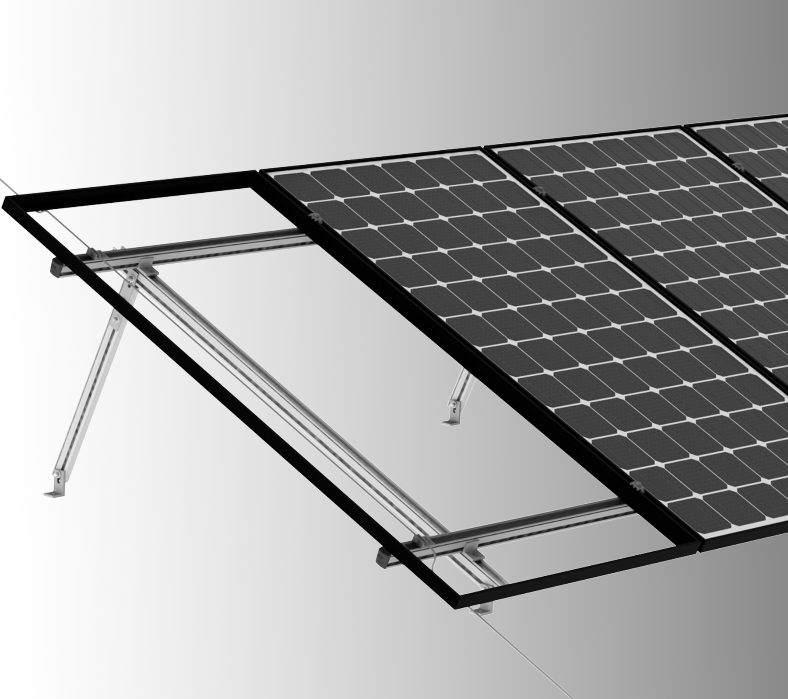
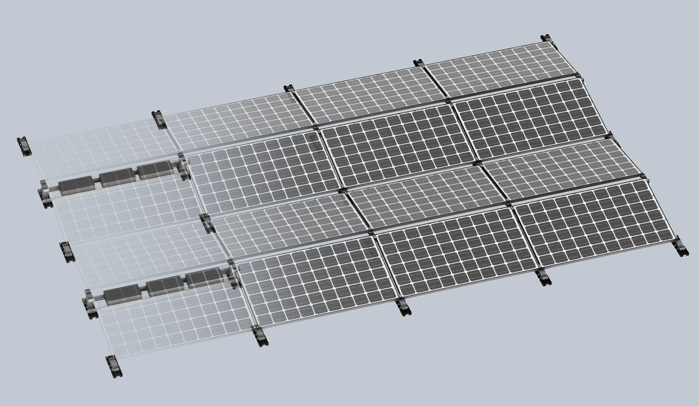
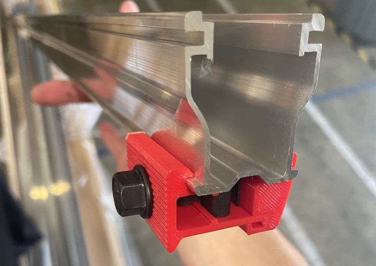
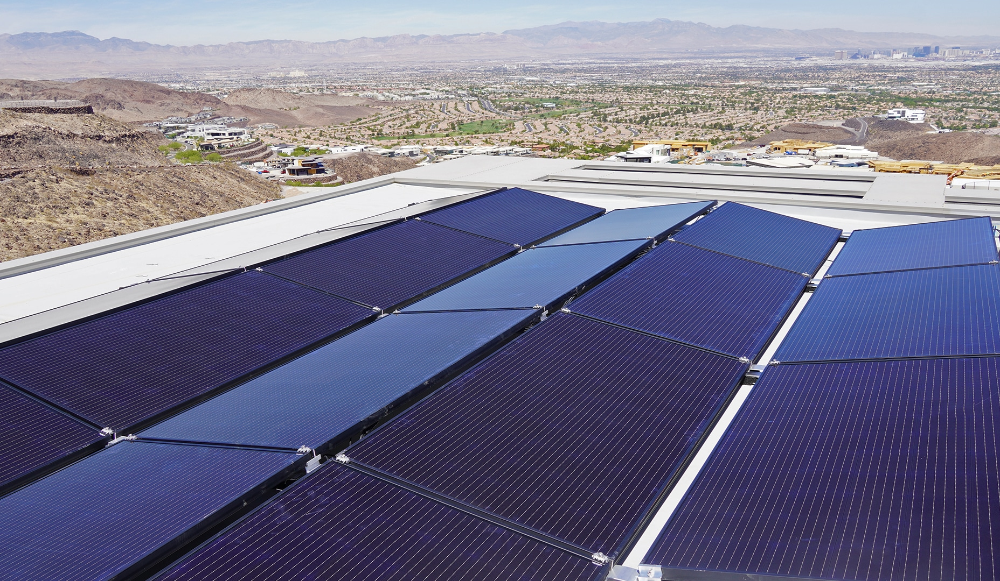
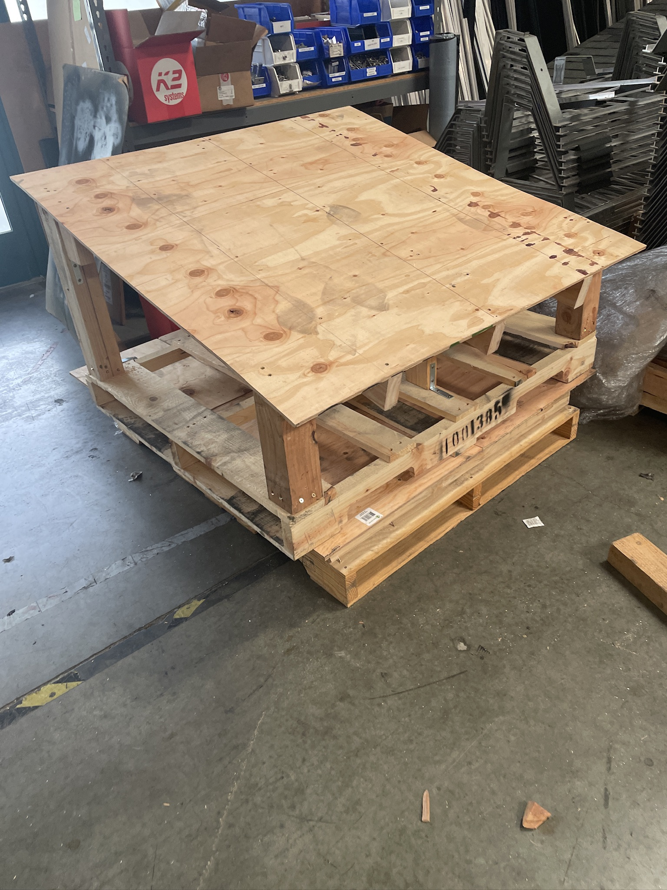
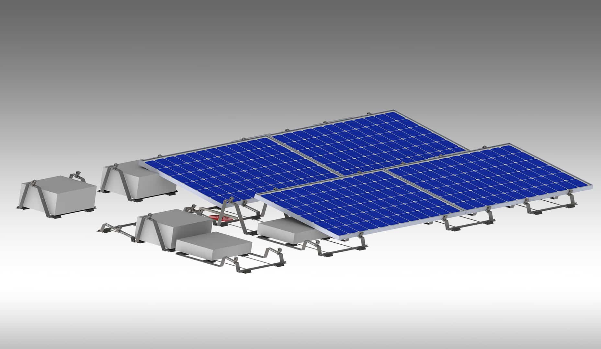

K2 Systems
Technical documentation, test jig design, and UL certification support for solar mounting products. Cut certification testing time by 50% and identified $15K in cost savings.

The Challenge
Adapting German engineering designs to meet US-specific building codes and regulations while maintaining product quality. Creating efficient test methodologies and coordinating certification processes across multiple regulatory authorities.
The Solution
Developed modular roof test system that could be reconfigured for multiple product lines. Created standardized documentation templates to streamline certification process and implemented digital workflow systems for cross-team collaboration.
Work Gallery






Key Responsibilities
Primary Focus
- • Developed comprehensive technical documentation
- • Designed and constructed test jigs for product validation
- • Streamlined UL certification processes
- • Collaborated with international engineering teams
Technologies & Skills
Solutions & Innovations
- • Developed modular roof test system reconfigurable for multiple product lines
- • Created standardized documentation templates reducing certification time by 50%
- • Implemented digital workflow systems for improved cross-team collaboration
- • Identified $15K in cost savings and reduced test fixture costs by 90%